01 · Roth scrollwork
RothUI · castbar.tga
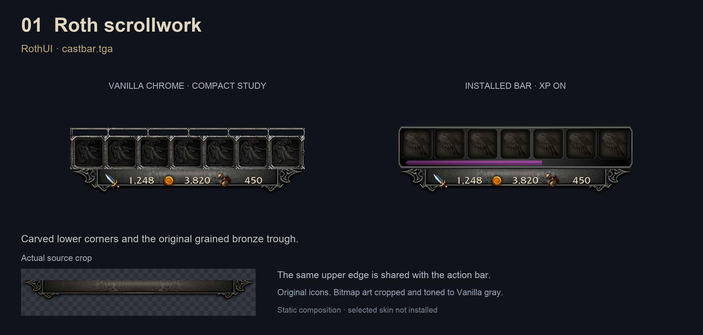
Carved lower corners and the original grained bronze trough.
02 · Roth shrine
RothUI · targettarget.tga
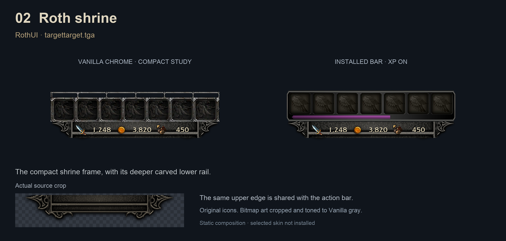
The compact shrine frame, with its deeper carved lower rail.
03 · Gothic cornerwork
RothUI · d3_altpower_border.tga
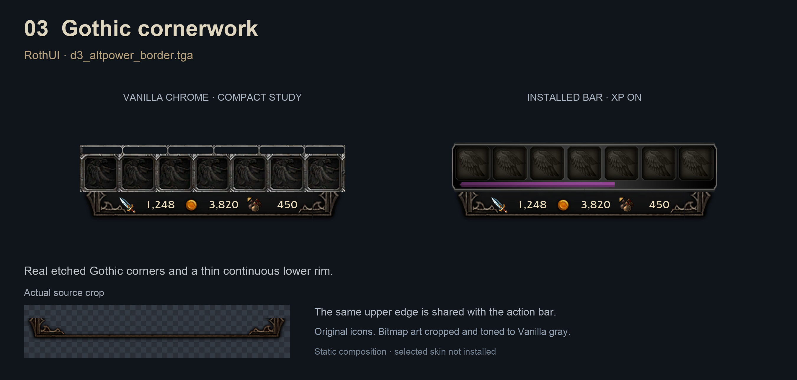
Real etched Gothic corners and a thin continuous lower rim.
04 · Iron sarcophagus
RothUI · demonic_fury_border.tga
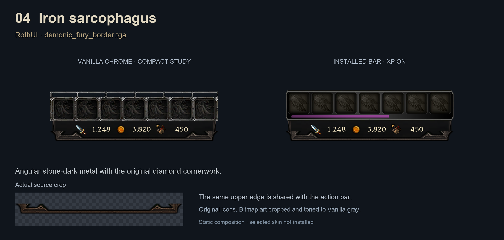
Angular stone-dark metal with the original diamond cornerwork.
05 · Diablo II silverwork
RothUI · d2tex/border_left.tga
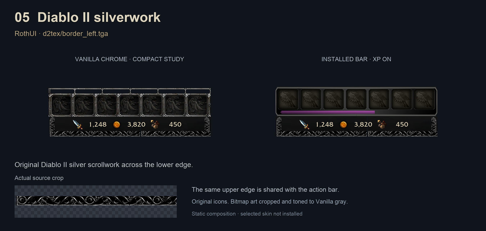
Original Diablo II silver scrollwork across the lower edge.
06 · Bone scrolls
RothUI · combo_bar_left.tga
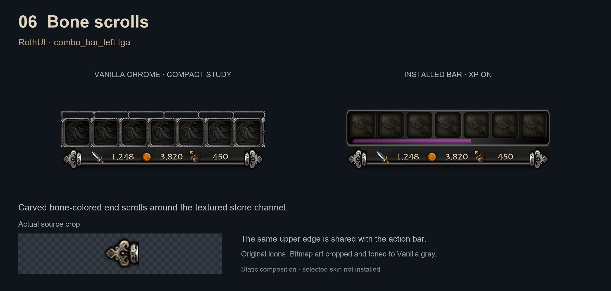
Carved bone-colored end scrolls around the textured stone channel.
07 · Knotted iron
RothUI · d3_nameplate_border.tga
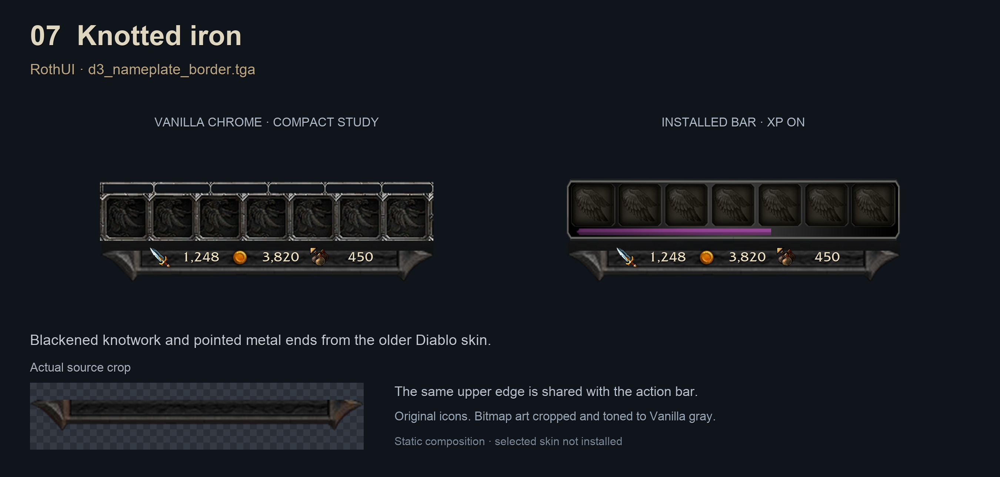
Blackened knotwork and pointed metal ends from the older Diablo skin.
08 · Diablo I masonry
RothUI · Diablo1/bar.tga
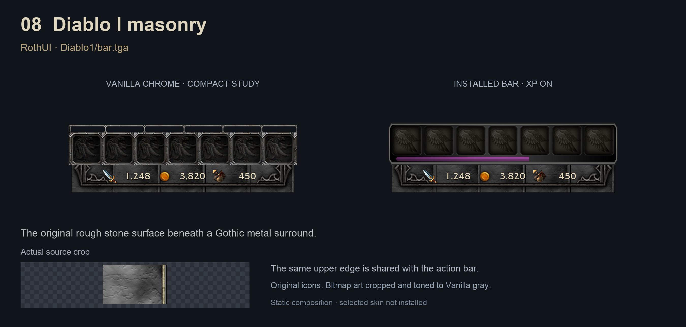
The original rough stone surface beneath a Gothic metal surround.
09 · Acanthus base
RothUI · vehiclebar.tga
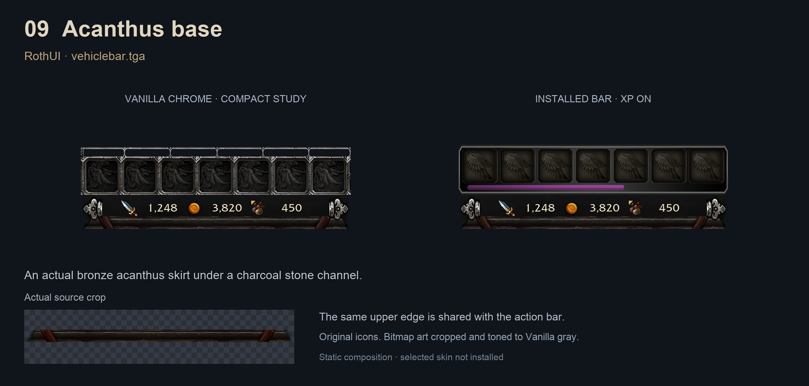
An actual bronze acanthus skirt under a charcoal stone channel.
10 · ARPG carved cornice
ARPG · TopBar.tga
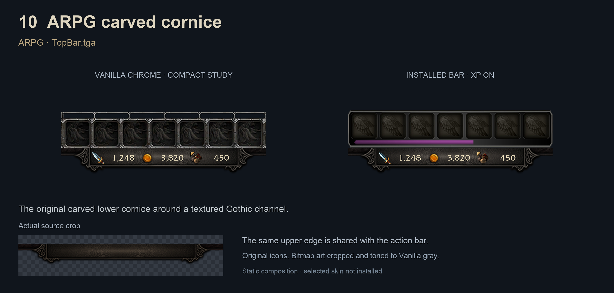
The original carved lower cornice around a textured Gothic channel.
11 · Gothic leaf corners
Diablo III UI · UIButton texture
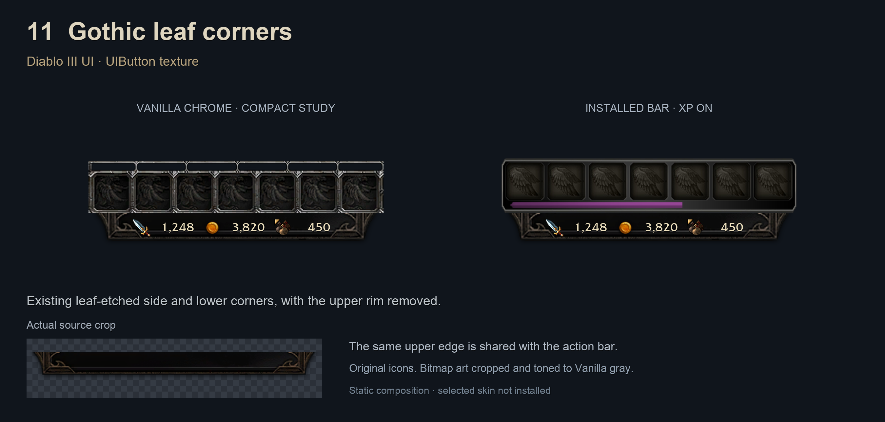
Existing leaf-etched side and lower corners, with the upper rim removed.
12 · Dragon iron
Diablo III UI · target.tga
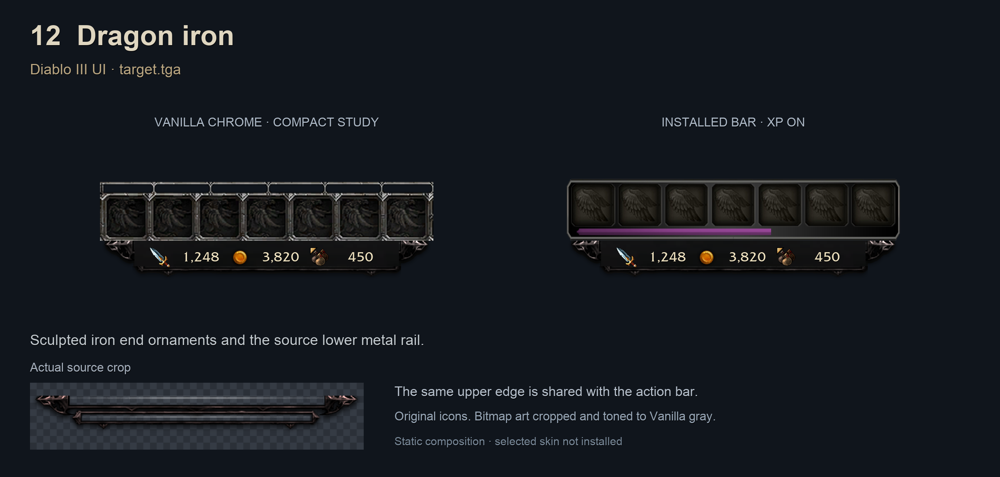
Sculpted iron end ornaments and the source lower metal rail.
13 · Demon reliquary
Diablo III UI · target_elite.tga
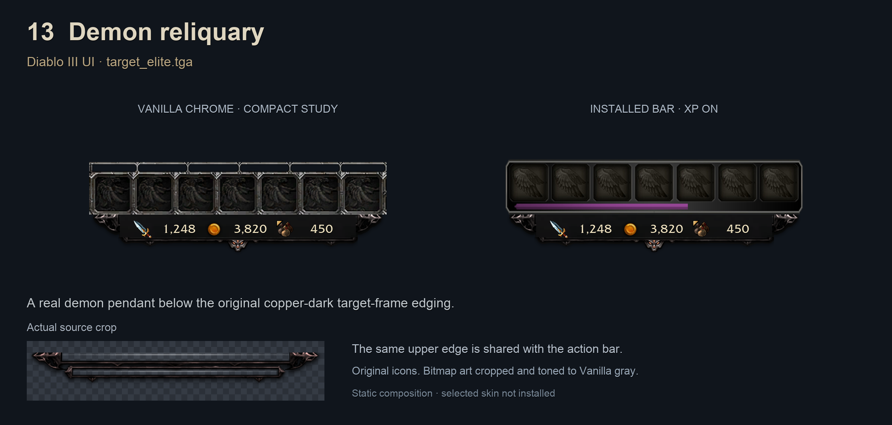
A real demon pendant below the original copper-dark target-frame edging.
14 · Spartan engraved bronze
SpartanUI · Classic DataBar
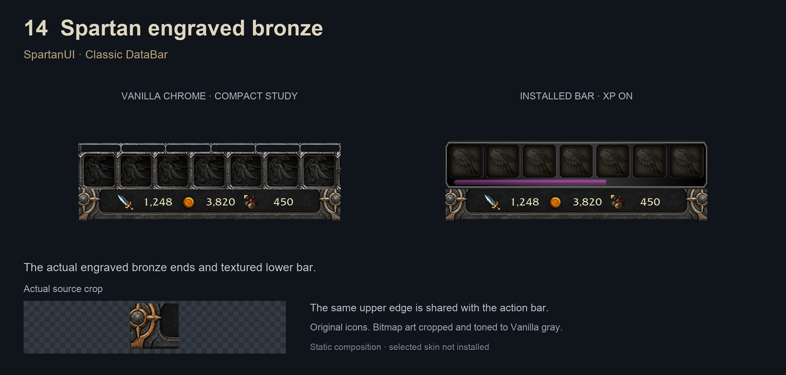
The actual engraved bronze ends and textured lower bar.
15 · Spartan tusk carving
SpartanUI · Tribal DataBar
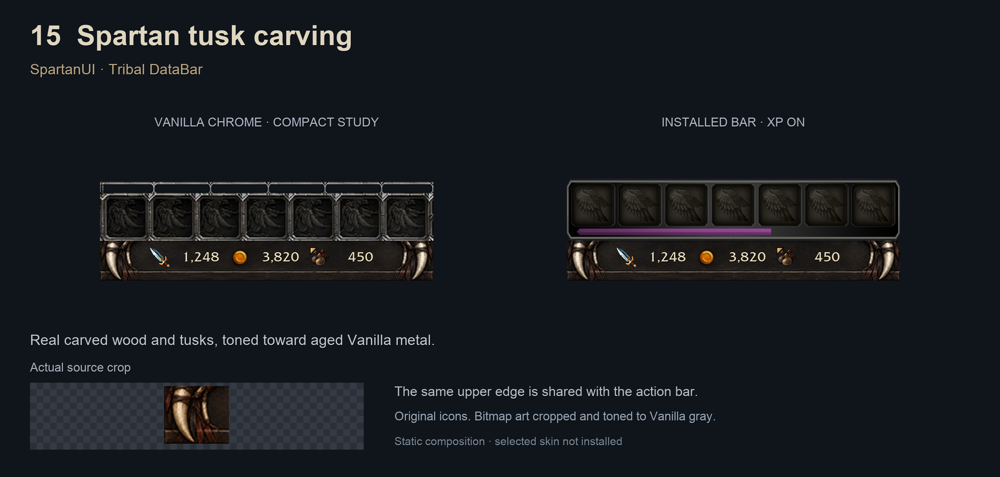
Real carved wood and tusks, toned toward aged Vanilla metal.
16 · Chiselled stone
SpartanUI · Shard DataBar
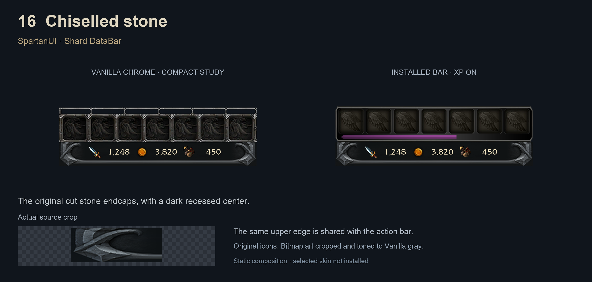
The original cut stone endcaps, with a dark recessed center.
17 · Black cathedral
SpartanUI · Midnight DataBar
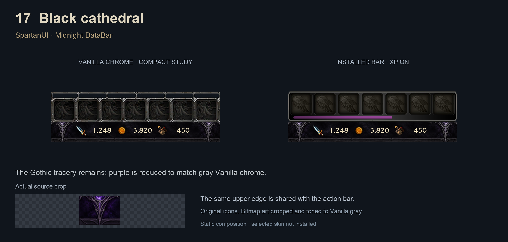
The Gothic tracery remains; purple is reduced to match gray Vanilla chrome.
18 · Weathered steel
SpartanUI · Classic base-left1
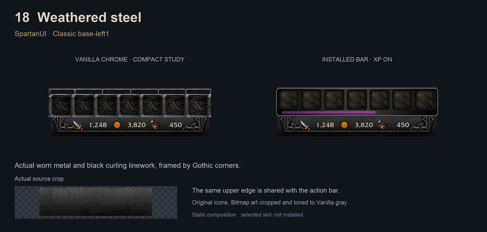
Actual worn metal and black curling linework, framed by Gothic corners.
19 · Gargoyle crest
RothUI · castbar + d3_head_garg
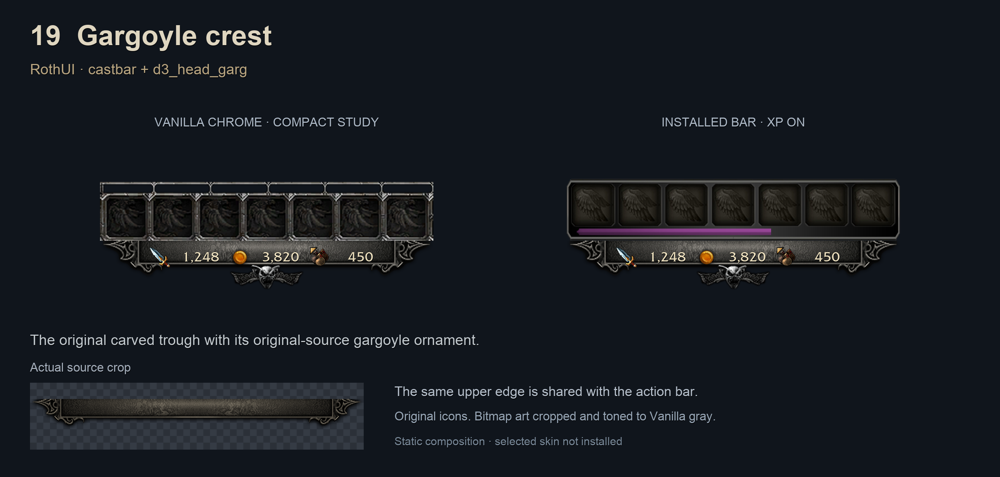
The original carved trough with its original-source gargoyle ornament.
20 · Bone reliquary
RothUI · shrine + d3_head_skull
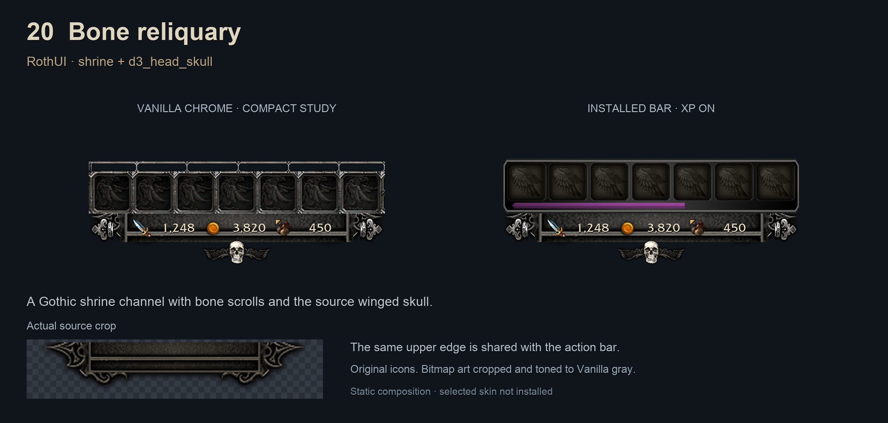
A Gothic shrine channel with bone scrolls and the source winged skull.